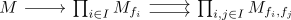

being a zero module is a zariski local property
Proposition
Being a zero module is a zariski-local property of modules.
Proof
observe that the localization of a zero module is the zero module. Moreover, if each $M_{f_i}$ is zero, then the equalizer

from zariski descent for modules is also the zero module, which shows that $M$ is the zero module.